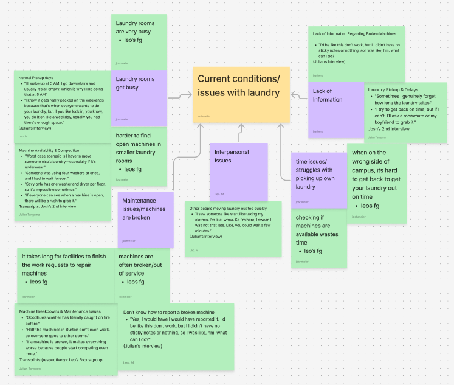
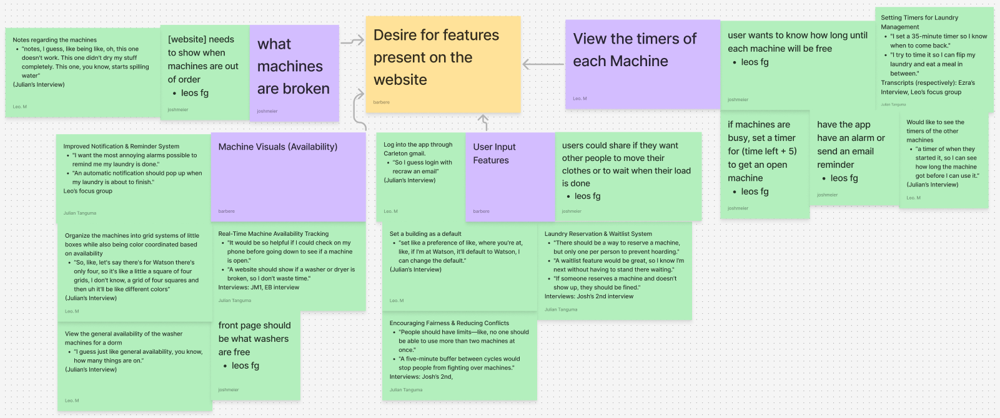
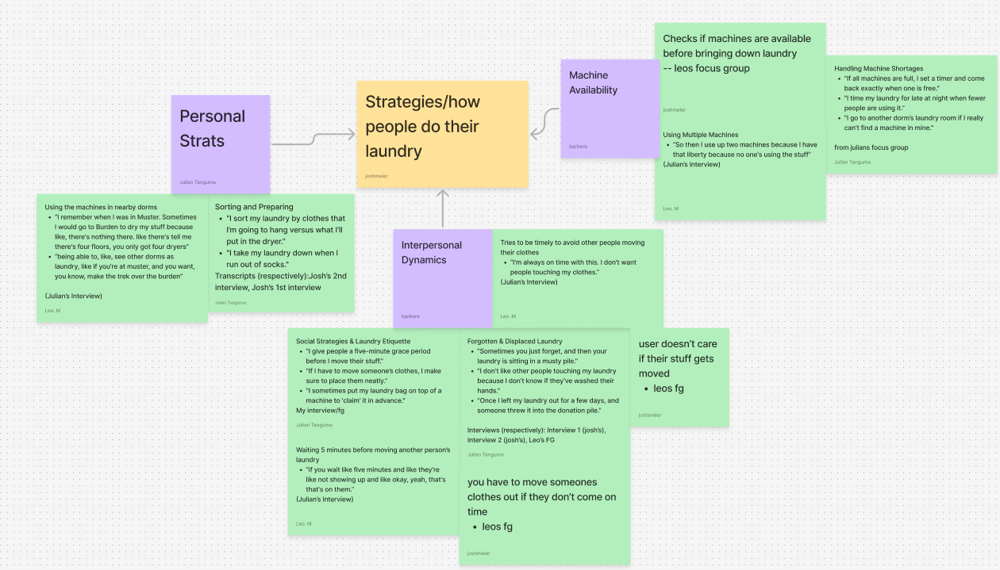

To form the 3 final requirements, my team and I underwent a UX research process which included interviewing other students, coding the interview transcripts, and forming a consensus. For the interviews, each of my teammates as well as myself ran interviews with our classmates to better understand their perspectives on the laundry situation and what they would like from our app. Some of these interviews were run as typical one-on-one interviews, or we would make use of focus groups and interview multiple people at once.
Quotes from Josh's second intervew:
"um, the worst case scenario is either actually a medium scenario in between worst and best is that there's nothing open because it kind of sucks, but I can just do it another day, but I think, like the worst case scenario, is that I have to move someone else's clothes, and it's a man's and there's underwear"
"So I actually usually, like, set a timer for like, a minute before their laundry ends, and then I go downstairs, and then I wait by the laundry machine with my laundry bag, but I give it like, five minutes after their laundry ends, and then if they're still not down, then I start moving it out."
"I mean, like, Duh. I feel like, I feel like, it would be cool if, like,if, like, you were able to see, like, if something was reserved. "
With the participants' approval, we recorded the interviews before using some tools such as Otter.ai to transcribe the interviews into a document that we could later edit and mark up. After fixing any mistakes made by the auto transcribers and censoring the names to maintain anonymity, we exchanged transcripts and started marking key points that the interviewees said. The way we marked up the transcripts is through a process called axial coding where we would organize quotes from the interviewees as being Phenomenas/User Goals, Causal Conditions, Contextual Conditions, Intervening Conditions, Action or Interactional Strategies, and Consequences. Then we made use of an affinity diagram using the quotes we marked and tried to find common themes between the quotes. With the diagram, we made a Google Spreadsheet that contained smaller codes that fit within the initial axial coding and worked on coding two of each other transcripts using the smaller codes. Following this, we made new pages in the spreadsheet for each team member to enter the quotes they found in the transcriptions they worked on and organized the quotes based on the codes they followed. These pages then allowed us to compare each other’s codings and to form a consensus of which quote follows which code, so that we can form our final requirements that our app needs to follow.



The three demos I provided consist of the three interaction flows that I designed bassed on the user and the use case. Each interaction flow is as follows:
Upon entering the New User interaction flow, you would enter your Carleton email and a password that you would like to use for your account. After hitting the Sign In button, you would then be prompted to select a dorm to set as your default building, which is the first building you would view upon subsequent logins. To select a dorm, you can either click on the star or name of the building on the map, type the name into the search bar, or select the building from the list below the search bar. After selecting the building name, the name enters the search bar if it wasn't already there, becomes bold in the list as well as on the map, and the star on the map changes to blue, you can then click on the arrow to submit your answer. Afterward, you are then able to view the availability of the dorm you had selected. However, if you tap on the Forgot Password link, and then enter your email address, the user will be informed that no account has been created yet and that they should make an account. The forgotten password page would then inform the user that they need to enter their Carleton email and whatever password they want to make their account.
Within the Normal Use interaction flow, the user can now use the forgotten password link and after entering their email address they get notified that an email is sent to them. The email would then provide the user with the necessary information for resetting their password and can then log on normally. After logging onto the app, the user can immediately see the availability of the building they set as default, and now you can use the change building link at the top of the screen. Tapping on the link brings the user back to the dorm selection screen, where they can select a different dorm to view. While viewing a different building, a button can be seen at the bottom that allows the user to select the building they are viewing as their new default building. By clicking on the box or text, the moment that the user logs back onto the app, the new building will then be treated as their default building.
For the Reserving interaction flow, the user will need to scan a QR code that would be seen on the door of the laundry machine that they are reserving. The user would then need to log onto their app, which brings them to a new screen for setting the timer for their machine. Within the new screen, the user would be able to choose the washing setting they are using for the actual machine, a button to start the timer, and a setting for adding 5 minutes to the timer. The washing setting would reflect the timer on the machine they are using and the additional 5 minutes is a way to ensure that the user has a little bit more time to move their laundry. After the timer starts, the user can then see two links, one that allows the user to report the machine if it is broken, and the other allows the user to view the availability of the building. After reporting their machine, the user gets redirected to a service request form for Carleton, for which they can easily report the machine to custodial staff. Returning to the availability of the building would allow the user to now see a star on the machine they had reserved. When the user clicks on the machine with the star, the user gets sent to the screen displaying the timer of the machine, as well as the link to report it when broken.
Prototype 3
For the final prototype, I treated the three requirements my teammates and I agreed on as tasks for when I next interviewed someone over my prototypes. For the new interview, I made use of a Think Aloud process, where the subject would vocalize their thoughts while interacting with my prototypes. During the process, I not only recorded the subjects voice and screen, with their permission, but I also kept track of the amount of time and mistakes it took to accomplish it, and whether or not they were able to complete the task without my help.
UX Evaluation results
New User
For finding the availability of the laundry machines, it took the user 2 minutes and 10 seconds after the user made 2 mistakes and they succeeded at the task.
Then for selecting the dorm preference, it took the user 1 minute and 56 seconds after the user made 15 mistakes, but they failed at the task without my help.
When I pointed out the enter button, which was an arrow to the left of the search bar, pointing left, they said "I thought that would be the back button for some reason"
Normal Use
For finding the availability of the laundry machines, it took the user 16 seconds with no mistakes and they succeeded at the task.
Then for selecting the dorm preference, it took the user 31 seconds after the user made 1 mistake and they succeeded at the task.
Reserving Machine
For finding the availability of the laundry machines, it took the user 56 seconds after the user made 2 mistakes and they succeeded at the task, which is the same results for reserving a machine.
After going through the tasks, they said "I wonder if you could favorite certain washer machines?"
Due to the amount of time and mistakes spent initially making the account, and the fact that the user initially believed that the enter button was the back button, I had adjusted the placement of the enter button as well as flipped it to point right instead of left.
To make the buttons more obvious, I made all buttons uniformed by giving them a dark outline, and turned the links into buttons as well, so as to stop users from tapping on non-interactive objects such as unreserved machines.
I then made sure to label each machine with a name and a number as per the request of the person I did the Think Aloud with. However, once the user reserves a machine, not only will a star appear like normal, but a button will appear underneath the reserved machine in place of their label.
I also added a notification bell when viewing the availability of a building to allow users to opt-out of being notified when their laundry is done, as per my classmates suggestion.
As a part of this notification bell, I also designed how the app would look when changing the settings for both notifications or the language to where the rest of the screen will dim down until the settings is closed.
Finally, as a part of reserving a machine, I also made use of the subjects request in allowing the user to favorite the machine, which doesn't do much aside from acting as a form of rating system for the backenda and giving the machine a little crown when viewing avaiability. Only one machine may have a crown in every building for each user.
As for future features that I was unable to implement within my third prototype would be to allow for reservations on a few of the machines in each building, add functionality to the magnifying glass, as establish an error screen for when the user does not enter their username and password, and an eye icon that allows the user to see what they are typing as their password.